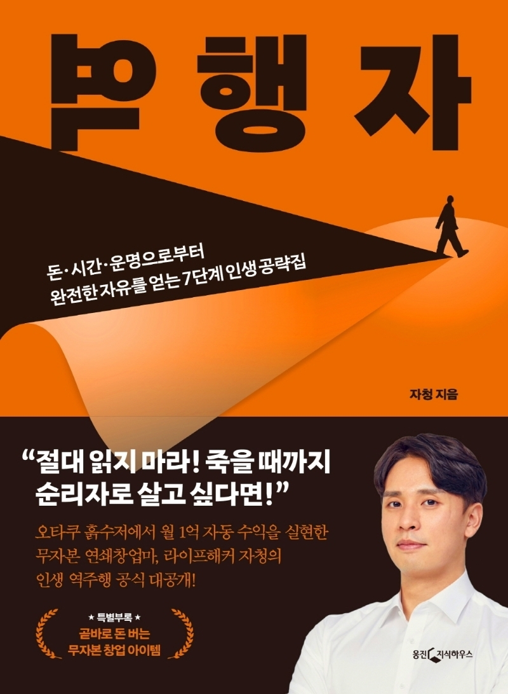

최근에 역행자 라는 책을 읽고서 생각이 많아졌다. 주로 나의 어떤 행동이 옳은지 아닌지를 생각할 때 주로 이 책의 내용이 떠오른다. 책에 의하면 우리는 진화과정에서 완벽한 적응이 아닌 엉성한 적응을 할 때가 있다. 하여 그 진화가 옛날엔 적합했을 지라도 지금의 사회에선 부적합할 수 있다. 이를 클루지라고 한다. 덕분에 항상 내 행동의 본능에 의한 멍청한 결정에 의한 것인지 아니면 합리적인 판단이었는지 항상 고민하게 된다.
분명 책의 내용 더 있었는데 어느 덧 거의 다 까먹었다. 지금 읽고 있는 책을 끝마치면 다시 한 번 읽어볼 계획이다.